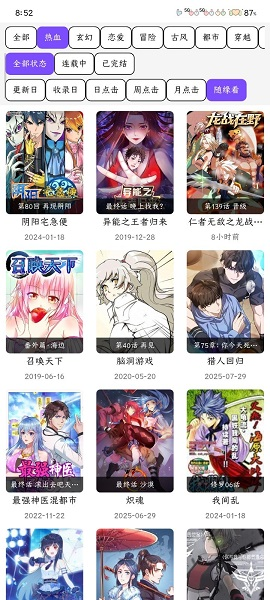
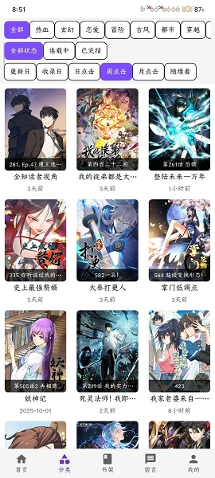

Colamanga 这一路走来：从"能看就行"到懂社区的漫画阅读器
一个免费漫画应用的迭代轨迹——画质三档、专属讨论区、自动购买防护，这些功能背后是团队三四年如一日的产品选择
现在手里打开的 Colamanga，书架里堆着十几部追更中的连载，点开任一部都能看到页面底部浮着一行「讨论」入口。进去是每部漫画专属的社区板块——有人晒刚画的同人图，有人猜测下一话的反转走向，偶尔还能见到运营的官方回复。
三年前我从官方下载拿了它装起来的时候，界面完全不是这样。
那个版本的 Colamanga 其实就是个纯阅读器：左侧书架、右侧翻页，支持基本的目录跳转和夜间模式。没有书城首页让我发现新作品，没有下载离线缓存，更别说讨论区这种听起来就很重运营的东西。甚至连画质选项当时只有一个「原图加载」的开关，要么全量要么省流，中间没有任何缓冲。
它从哪起步：一个"够用就行"的漫画阅读器
早期的 Colamanga 定位非常清晰——做一个体积小、启动快、不弹广告的漫画阅读器。定位清晰到什么程度？打开应用直接进书架，没有启动页，没有开屏广告，连应用图标都是极简的白底黑字。
我当时在论坛上看到它官网的介绍帖，标题就是「一个自己写的漫画阅读器，没什么花活」。确实没什么花活：支持主流漫画源、翻页流畅、夜间模式护眼、书架管理，就这些。对于只想安安静静追漫画的人来说够用了，但对于想发现新作品、想跟同好交流的人来说，它更像一个孤立的工具，而不是一个社区。
现在再去看早期版本的功能清单，你会发现一个很有意思的特点：它几乎跳过了"做重阅读器"的阶段。竞品们在那一年都在卷阅读器参数——页边距微调、翻页动画、重力感应、双指缩放比例调节，而 Colamanga 几乎没碰这些。它在基础阅读体验能跑通之后，就直接往"书城 + 社区"的方向走了。
关键转折点：书城、讨论区、画质三档——一年半的密集迭代
我记得有一次更新，版本号从 1.2 直接跳到了 1.5，间隔不到两个月。那次更新日志写了将近两屏：新增书城首页、新增分类浏览、支持漫画详情页、上线专属讨论区。一口气把"发现新漫画"和"跟同好聊"这两件事从外部拉进了应用内部。
书城的加入是个分水岭。之前 Colamanga 的用户增长基本靠口口相传和论坛帖子，有了书城之后，应用自己就能做分发——编辑精选榜单、分类标签、热门搜索，一套完整的发现机制跑起来了。但真正让它跟其他阅读器拉开差距的是讨论区。
每部漫画详情页下面挂一个独立讨论区，这个设计现在看来很直觉，但当时很少有阅读器这么做。大多数应用要么是全站一个大论坛，要么干脆没有社区功能。Colamanga 把社区跟作品强绑定之后，整个产品的气质变了：它不再只是一个工具，而是一个围绕漫画作品聚集起来的阅读社区。

紧接着又来了画质三档。之前那个"原图加载"开关太粗糙了，流量敏感用户和 Wi-Fi 用户的需求完全不一样，硬塞一个开关等于谁都没伺候好。高清、省流、自动三档的设计其实没什么特别精巧的技术，自动模式的判断逻辑也简单到让人会心一笑——检测到 Wi-Fi 就高清，检测到移动数据就省流，网络不稳定临时降级。但就是这种"够用就行"的朴素设计，反而把用户体验照顾到了。
现在打开阅读器调出设置面板，画质选项下面还有一行小字提示："下载离线缓存时默认高清"——这是后来迭代加上去的，但从那个版本开始，Colamanga 在细节上不再是之前那种敷衍的"没什么花活"了。
他们一直在死磕什么：免费、安全、不打扰
三年多下来，Colamanga 的迭代节奏给我一个很深的印象：团队几乎不碰付费功能的复杂实现。我特意去翻了它的设置中心，关于自动购买的关闭指引我后来去colamanga文档确认过，这个选项默认就是关闭的，应用本身主打免费无广告，付费相关的设置项更多像是给不同分发渠道预留的兼容层。

这件事说起来简单，但放到当时的环境里看就不普通。那个年代很多漫画应用靠内购会员、付费章节、广告变现来养活自己，Colamanga 反其道而行之，甚至专门加了「自动购买下一话」的关闭指引，怕用户不小心被扣钱。这背后体现的不是"没钱做付费"，而是一个很明确的产品选择：不把用户赶去复杂的付费体系里，先把免费体验做好。
所以它死磕的是什么？是三个方向：
- 免费体验不打折：书城、讨论区、画质三档这些功能全都不设付费墙，免费用户和付费用户（如果有的话）体验完全一致
- 不打扰：没有开屏广告、没有推送骚扰、没有强制引导登录，甚至离线缓存都可以匿名使用
- 安全兜底：黑屏白屏的排查指引、自动购买的关闭开关、定期清理缓存的建议——这些都是"用户可能踩坑时我们帮你兜住"的思路
而它一直不管的是什么？是那些看起来很酷炫但对用户没什么实际价值的东西：皮肤商城、成就系统、排行榜、主题色切换。我等了三年，它还是只有那一套深色主题，还是没有成就徽章，还是不做签到送积分。
照这个路线，下一步大概会怎么走
从这三年的迭代节奏来推，Colamanga 下一步大概率还是沿着"社区浓度 + 阅读体验细节"两条线走。
讨论区现在已经有了发帖、回复、点赞、话题标签，但官方运营的参与度还比较浅，讨论区氛围也还在建立阶段。如果它要在社区上继续投入，可能会上线话题合集、用户等级体系，或者让漫画作者本人入驻——但以它一贯的克制风格，这些功能即便做也会做得很轻。
阅读器那边，竞品已经卷到了沉浸式全屏、自定义手势、双屏对比阅读这些方向，Colamanga 大概率还是只会在"对用户有用的细节"上补。比如双指放大后的清晰度、离线缓存的空间管理、多设备书架同步——这些是真正影响日常使用的痛点。
但这是我从迭代规律推的，不是官方口径。三年前我也没想到它会突然上线讨论区，也许下一个版本又会给人一个惊喜。
最后
回头看这三年，Colamanga 的产品逻辑其实没变过：做一个让你安安静静追漫画的地方。变的是它从"一个人自己写的小工具"长成了"有社区、有书城、有完善体验的完整应用"，但内核里那个"不打扰、不收费、够用就行"的初衷一直没丢。
如果你也在用，打开它看看书架里追了多少部、看看讨论区有没有人刚发了新帖子——那就是这三年迭代最直观的痕迹。
这套资料我放在三个地方都能拿到：GitHub上是最原始的仓库备份，国内访问慢的话可以去Gitee镜像，GitCode那边也同步了一份方便不同平台的用户。三条路随便挑，内容都是一样的。